Verdichtung in der Büttenhalde
Urbane Nachverdichtung einer 1970er-Siedlung in Luzern
Die Büttenenhalde-Siedlung wurde Anfang der 1970er-Jahre von Walter Rüssli als Familien-Quartier am Rande von Luzern entworfen und spiegelte den damaligen Zeitgeist: Familie und Auto hatten einen grossen Stellenwert, was sich im Entwurf und den Grundrissen der Häuser äussert. 3.5- und 4.5-Zimmer-Wohnungen machen über zwei Drittel aller Wohnungen aus. Eine Spielstrasse zwischen den Gebäuden von Etappe 2 und 3 soll die Siedlung beleben und die Interaktion fördern.
50 Jahre später ist das Quartier wenig durchmischt und überwiegend von älteren Personen bewohnt. Die Spielstrasse ist nicht mehr belebt und in den grosszügigen Wohnungen leben hauptsächlich nur Paare oder Einzelpersonen. In Zukunft wird es immer mehr flexiblen und günstigen Wohnraum brauchen. Irgendwann wird auch die Stadt Luzern wachsen und mehr Platz am Stadtrand benötigen.
Das Ziel des Projekts ist, durch Verdichtung dem Quartier neues Leben einzuhauchen. Verdichten bedeutet nicht nur mehr Wohnungen zu schaffen, sondern auch einen guten Wohnungsmix zu fördern, um generationsdurchmischtes Wohnen zu ermöglichen. Sowohl ältere Menschen als auch neu zugezogene Familien, Singles oder Studenten sollen passende Wohnungen finden und zusammenleben können.
Wo viele Menschen aufeinandertreffen, sind soziale Räume wichtig, sei es durch Gemeinschaftsräume oder die Gestaltung des Aussenraums. Ein grösserer Park oder Grünfläche neben der Siedlung soll dem ganzen Quartier sowie der Stadt Luzern mit viel Nutzungsmöglichkeiten als Naherholungsgebiet, Treffpunkt oder Aktivitätsfläche dienen.
Am Beispiel der Etappe 1 soll das Projekt zeigen, wie eine Entwicklung mit deutlicher Verdichtung aussehen soll. Die bestehenden Gebäude bleiben erhalten und werden um 2-3 Geschosse aufgestockt sowie durch langgezogene Anbauten ergänzt. Die Wohnungen sollen das bestehende Angebot erweitern und das Verhältnis von kleinen zu grossen Wohnungen ändern. Im Sinne der Nachhaltigkeit soll ein reduzierter pro Kopf Flächenverbrauch erreicht werden. Zudem sollen alle Bereiche und Wohnungen barrierefrei gestaltet sein.
Die Grundrisse und Wohnungsgrössen sind anpassbar und können auf die diversen Umstände reagieren. Das Neugebaute soll sich am Bestand orientieren und harmonisch einfügen.
Pläne & Zeichnungen
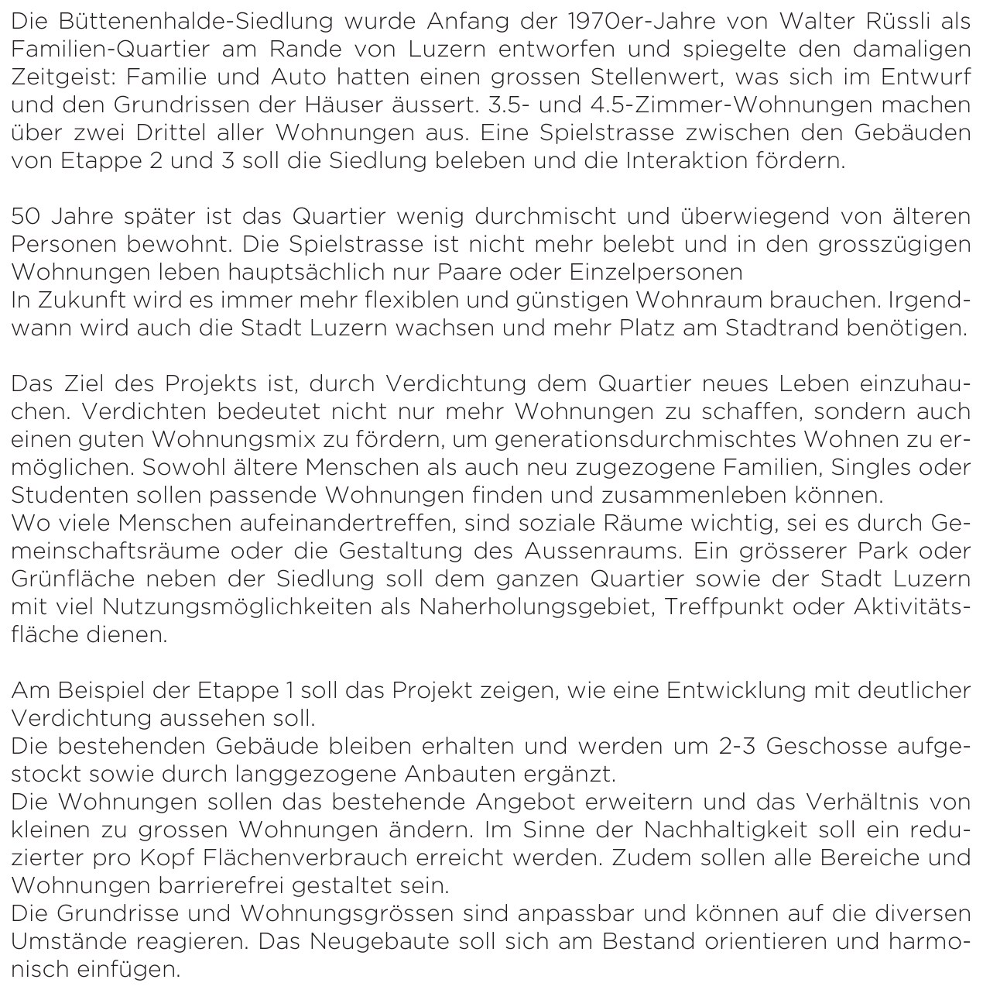
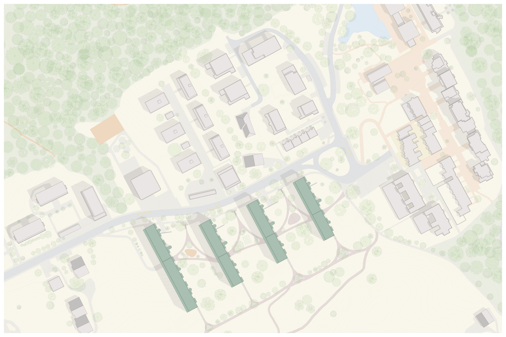
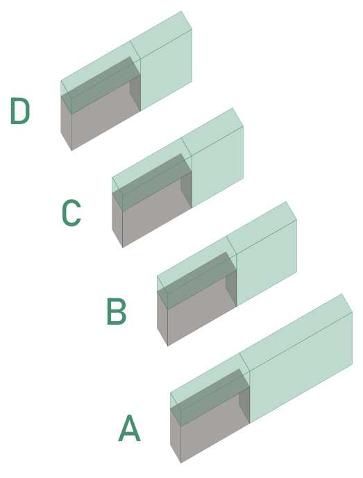
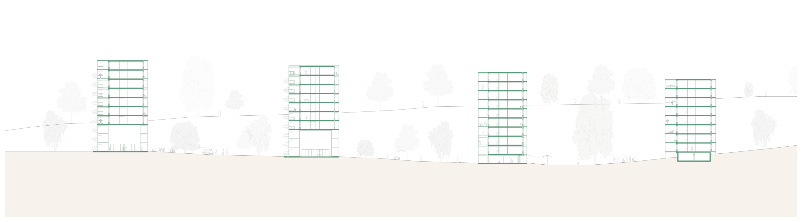
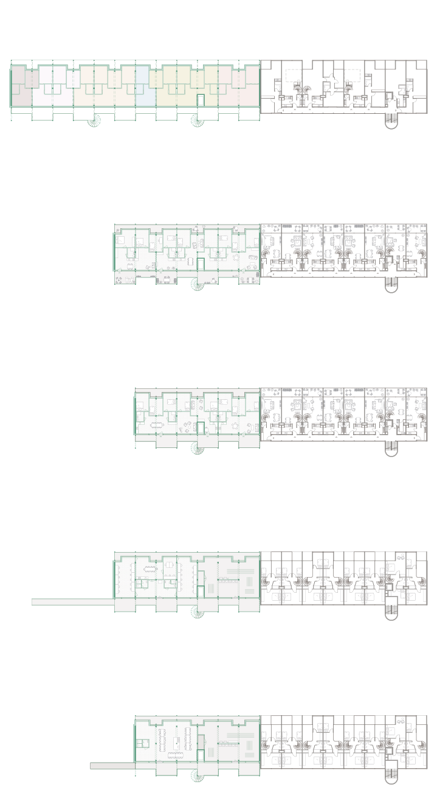
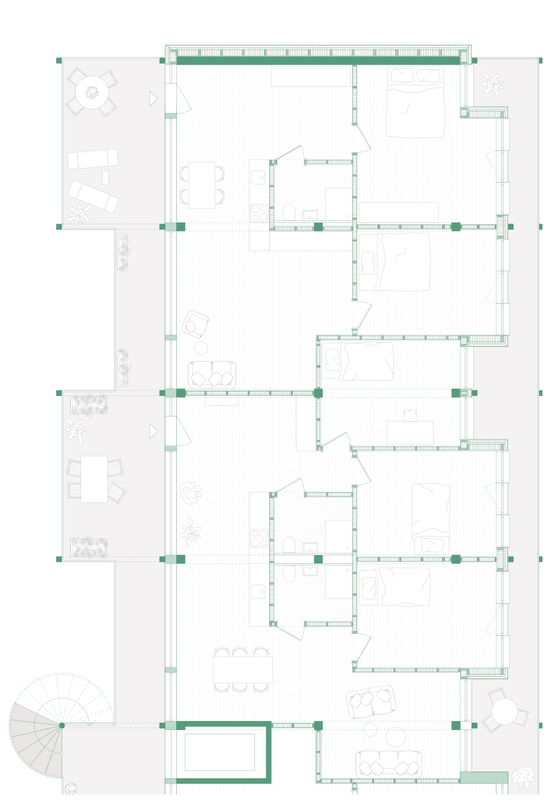
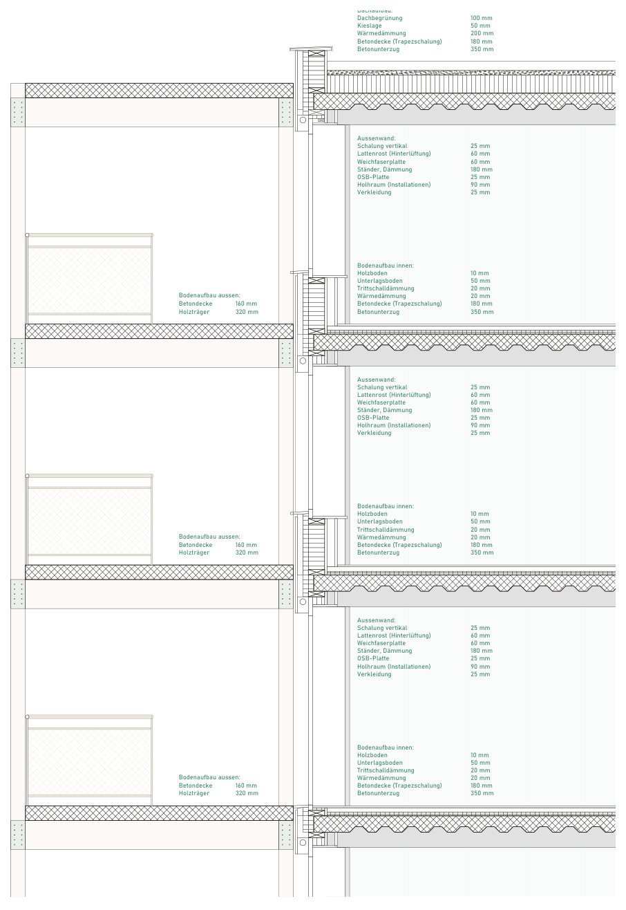
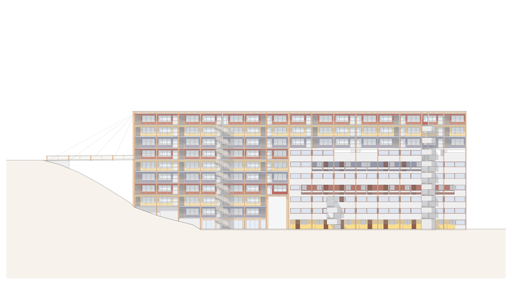
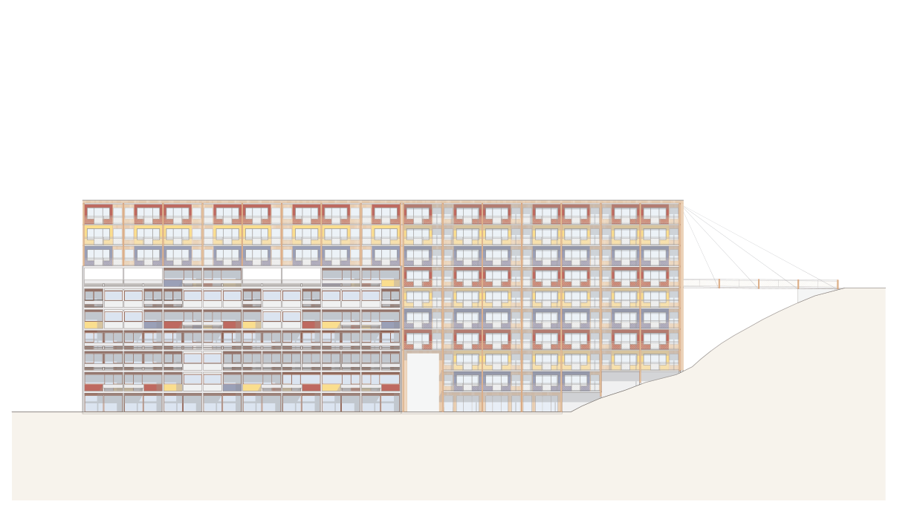
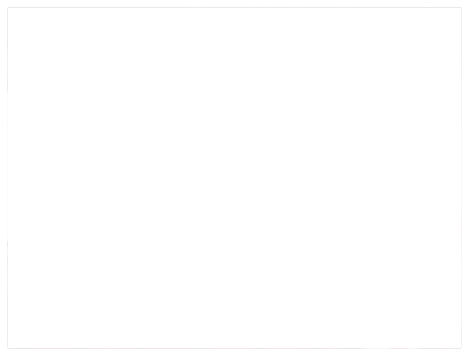
Visualisierung
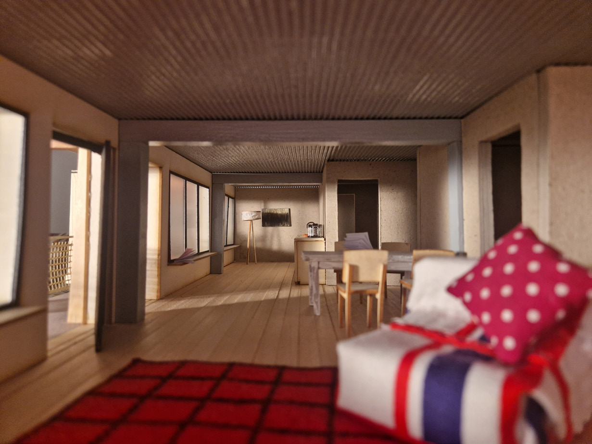